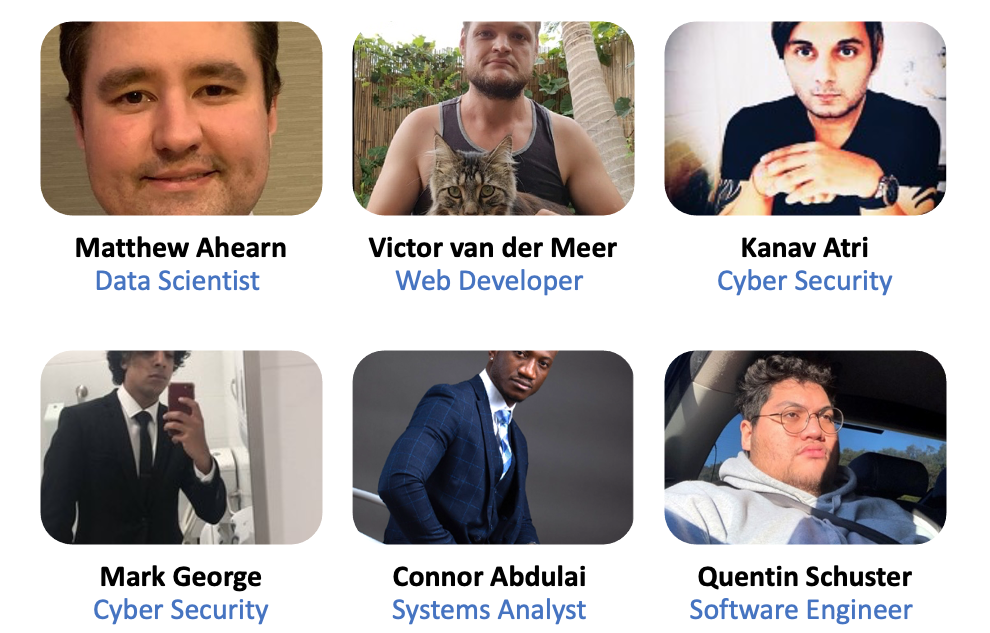

We are the Pet Finders, we are 100% Australian owned and ran but, we come from different parts of the world.

Matthew Ahearn
My name is Matthew Ahearn, I am an Australian citizen who has lived and worked in four cities in Australia and two in New Zealand. For the last ten years I have worked as an airline pilot after completing my Commercial Pilots Licence and an associated Diploma of Aviation.
I was fortunate enough to work with an amazing group of people from all around the world. Probably the most dramatic moment in my flying career was when one of my engines failed shortly after take-off. Thankfully, we were able to return the aircraft to the departure aerodrome safely!
Like many people I have been interested in IT from an early age. I was fascinated by videogames growing up and am often amazed by people’s ingenious ideas to apply IT to our daily lives. Aviation itself provides a strong example, the greatest safety improvements in the last 30 years were the traffic Collision and Avoidance System and the Ground Proximity Warning System. These two programmes have saved many lives. I was particularly inspired when I learned that a colleague of mine had created an app that could pull a pilot’s roster from the airlines server and alert you to changes, as well as share those with family and friends.
This was immediately useful as informing your family about last minute roster changes could get difficult. I particularly enjoyed sharing a monthly map of where I had flown.
From there I started self-teaching for hobby projects using HTML, CSS and Java and am now working with SQL and XML in a client services role. I am excited to bring these skills to my role of Database Administrator with the Pet Finders!
Victor Van de Meer
I am an Australian Citizen, born in regional NSW and have lived in Sydney for more than 12 years. My mum and dad were both born in the Netherlands and migrated to Australia post-WWII.
I am an advocate and passionate champion of LGBTQI+ rights, contributing to the well-being of humanity on a personal level. My hobbies include running a business, DJ’ing, photography, web design and programming, I also enjoy creative arts, including writing, music, painting and graphic design.
I have been building websites and developing web platforms for more than 2 decades and have also worked casually as a freelance web consultant, on the side of working full-time in the property and facilities management industry.
I have now left that profession and aiming to pursue employment in fields related to Information Technology. I am excited to be creating the Petfindr collar and app with the new Pet Finder team!
Kanav Atri
I was born in the city of Jammu, Jammu and Kashmir, India and spent most of my childhood and teenage years growing up in a joint family.
I finished my high school in 2006 and decided to move abroad for higher studies, this was not an easy decision as I had never stayed away from my family even for a month so, moving to a new country all together was something which was quite a huge thing and at first my parents did not agree however after I kept insisting they finally agreed to send me abroad.
I.T has always been an important part of my life. I can still remember that attending computer classes back in secondary school always excited me and I always looked forward to learning more about computers and how they work.
My interest is in Cyber security and AI. I find both these fields very fascinating especially in todays era where cyber threats, robotics etc has become a part of our day to day lives and there is not even a shred of a doubt in my mind that these two fields will shape our future. I hope that I can bring my skills and experience to good effect with Pet Finders
Mark George
I am Egyptian Coptic Orthodox with a Cert III in Information Digital media and Technology. I can speak English and Arabic. Growing up, I have always been fascinated in IT, other than messing around with computers throughout my life, a Cert III in Information Digital media and Technology is the only IT experience and qualification I have.
For a fun fact, both my parents being purely Coptic, this means I am a direct descendant from the pharaohs of ancient Egypt. I am looking forward to working with Pet Finders
Connor Abdulai
Hello Pet Finers I am Connor Abdulai born in west Africa Sierra Leone, A menda Kono by tribe and English is my second language.
Upon compilation of my high school to university I migrated to Australia in 2016. From then to now during which my interest in IT was established, I have completed my Certificate II in Information Digital Media and Technology through TAFE and Infoexchange via a youth IT program. In Which I had the opportunity to make a presentation at J.P Morgan, Microsoft and Total Synergy on the topic Identity theft.
I am ambitious and driven, motivated by challenges, energetic and compassionate. I like reading and analysing information. During my leisure time I like exercising, spending time with loved ones or watching basketball as it is my favourite sport.
My interest in IT started unconsciously through the access to radios, telephones, mobile phones and computers. Growing up my uncle used to tell me a story of what they have to go through to make a 5 minute call to our families in the US.
Firstly they have to wait for the scheduled date that has been set for the call, then have to travel to the capital city if a line is not available in your district at that moment, wake up about 4-5am in the morning to join the long queue at the post office where the telephone boot was. One will have to wait in the queue for almost half the day, sometimes the whole day to get a call or make a call. And the most stressful part of it all was after going through all this sometime is either they do not end up calling or did not pick up their calls. Which means you will have to go back home and wait for a message from the post office for another schedule call.
When telephones finally become accessible in most home, i will run closer to anyone I see making a call, wondering if the person is in the telephone, or how is that sound of the person coming in, are they talking through a pip from the US to Africa or is just some witchcraft or magician manipulating and making sound, I asked myself.
Sometimes I and some of my friends will go around looking for long tubes or pips just to talk to each through it. Then finally mobile phones and computers became accessible. Even though I did not have one till I was old enough.
What I always do when I get hold of people phones or computers, either by giving it to me to drop it off at the recharging boot when there is a suitage of electricity which is widely common or request it from someone to just have a look.
I will go through the setting systematically and make sure I play around all the settings because I have no one to call. By doing so I started becoming so familiarised with phones and computers that could help my relatives successfully whenever they have difficulty with their phones or computer.
The fact that i was able to help them makes me very happy. And so my interest in those computers hardware and software became more and more interesting to me. And today's world is highly embedded and basically everything is like a revolution in the hands of IT. as If not all but most aspects of life are associated with IT.
Quentin Schuster
My name its Quentin K Schuster and I am a part of PetFinders! IT has always and will always be a part of my life. I don’t have an interest in a singular branch of IT, but I have always been interested in the field. I don’t have any experience in IT, but I have been trying to learn Python in my spare time cause a friend recommended I learn it as it’s the easiest and the most used out of all the coding languages used in the field. My hobbies include Gaming, Anime and reading Manga.